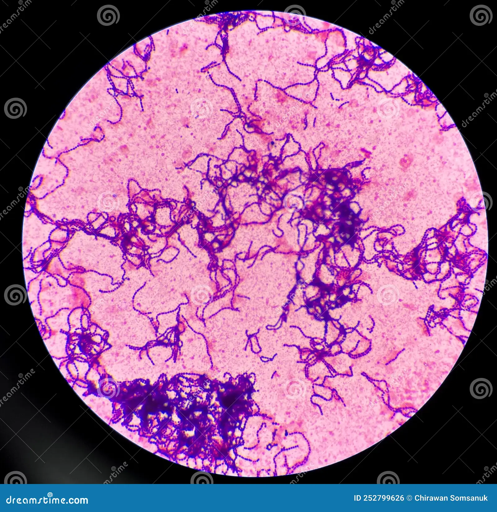

Introducción
Los estafilococos son células esféricas gram positivas, dispuestas en racimos irregulares.
- • Fermentan carbohidratos y producen pigmentos
- • Algunos son microbiota normal de piel y mucosas
- • Otros causan infecciones piógenas
- • Desarrollan resistencia antimicrobiana rápidamente

Staphylococcus aureus
- • Coagulasa positivo
- • Produce infecciones cutáneas y alimenticias
- • Cuadros leves a graves
- • Resistencia a varios antimicrobianos
Staphylococcus coagulasa negativo
- • Microbiota normal de la piel
- • Enfermedad en inmunosupresión
- • Infecciones de dispositivos protésicos
- • S. saprophyticus: infecciones urinarias